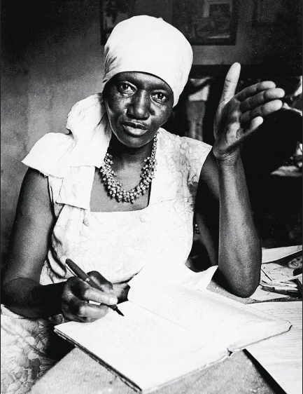
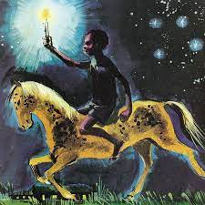

Joaquim Maria Machado de Assis nasceu em 21 de junho de 1839, no Rio
de Janeiro, filho de Francisco José de Assis e Maria Leopoldina.
Criado no bairro do Livramento, Machado estudou na escola pública de
São Cristóvão e desenvolveu interesse pelo latim com o padre
Silveira Sarmento. Após a morte da mãe, seu pai casou-se novamente
em 1854. Aos 15 anos, buscando emprego, Machado conheceu Francisco
de Paula Brito, dono de uma livraria, jornal e tipografia. Em 1855,
seu poema "Ela" foi publicado na "Marmota Fluminense".

Carolina M. de Jesus
Carolina Maria de Jesus (1914-1977), escritora brasileira e uma das
primeiras autoras negras notáveis do país, ficou conhecida pelo best
seller autobiográfico "Quarto de Despejo: Diário de uma Favelada".
Nascida em Sacramento, Minas Gerais, em uma família humilde, teve
breve passagem pela escola, mas desenvolveu o gosto pela leitura e
escrita. Após mudanças familiares em busca de oportunidades,
Carolina, morando na favela, trabalhava como catadora de papel
durante a noite, registrando seu cotidiano por escrito.
Conceição Evaristo
Conceição Evaristo nasceu em
1946, é escritora brasileira de origem humilde que migrou para o
Rio de Janeiro na década de 1970. Graduada em Letras pela UFRJ,
tornou-se professora na rede pública de ensino no Rio. Com mestrado
em Literatura Brasileira e doutorado em Literatura Comparada,
Evaristo é ativa nos movimentos de valorização da cultura negra no
Brasil. Ela estreou na literatura em 1990, e essas algumas das principais obras
de Conceição Evaristo: Ponciá Vicêncio, Becos da Memória
e Olhos d'água.
Martin Luther King Jr.
Martin Luther King Jr., nascido em Atlanta em 15 de janeiro de 1929,
nos Estados
Unidos. Ele se destacou como líder proeminente no movimento dos
direitos civis, dedicando-se à luta pela igualdade de direitos de
1955 até sua trágica morte em 4 de abril de 1968, em Memphis. King,
notável por sua abordagem baseada na não-violência e desobediência
civil, foi inspirado por suas convicções cristãs e pelo ativismo
não-violento de Mahatma Gandhi. Sua liderança começou com o boicote
aos ônibus de Montgomery em 1955.
Figuras Literárias:
Saci Pererê
O Saci é uma figura folclórica brasileira, retratada como um jovem negro de uma perna só, usando uma carapuça mágica. Essa caracterização tem semelhanças com um mito romano citado por Petrônio no Satíricon. O Saci é conhecido por suas travessuras com animais e pessoas, criando certos desafios. Também, surpreende viajantes noturnos com assovios agudos. Essa figura folclórica brasileira é cativante, incorporando elementos mágicos e lúdicos em suas histórias, sendo parte importante da mitologia do país.

Negrinho do Pastoreio
A história do Negrinho do Pastoreio, uma lenda afro-cristã que
ganhou popularidade no final do século XIX, reflete a sensibilidade
da época, marcada pela luta contra a escravidão. O primeiro relato
conhecido foi feito por Antônio Maria do Amaral Ribeiro em 1857,
que, à época, caracterizou a lenda como uma superstição absurda. Ao
longo dos anos, diversos escritores, incluindo Alberto Coelho da
Cunha, Apolinário Porto Alegre e Alfredo Varela, contribuíram para a
difusão da narrativa.